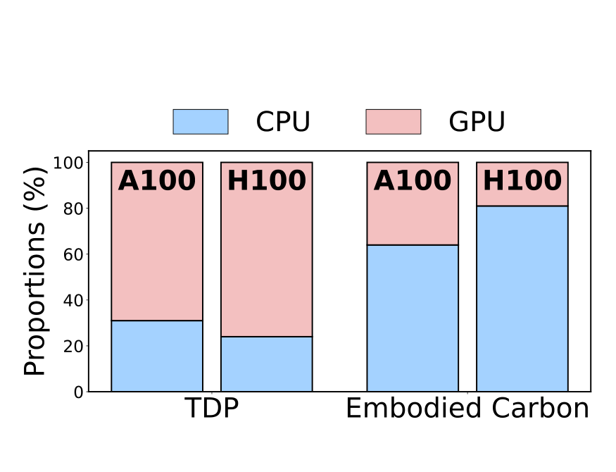
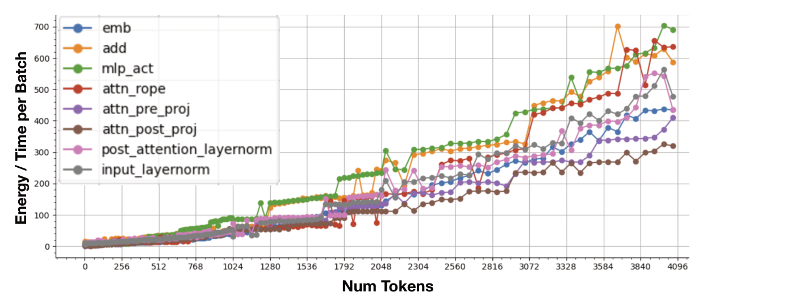
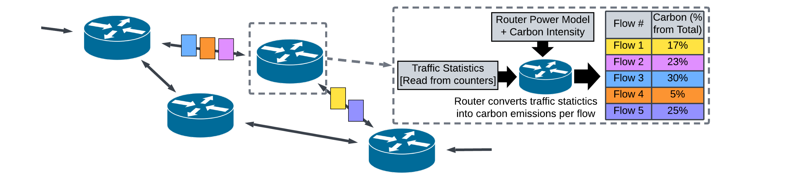
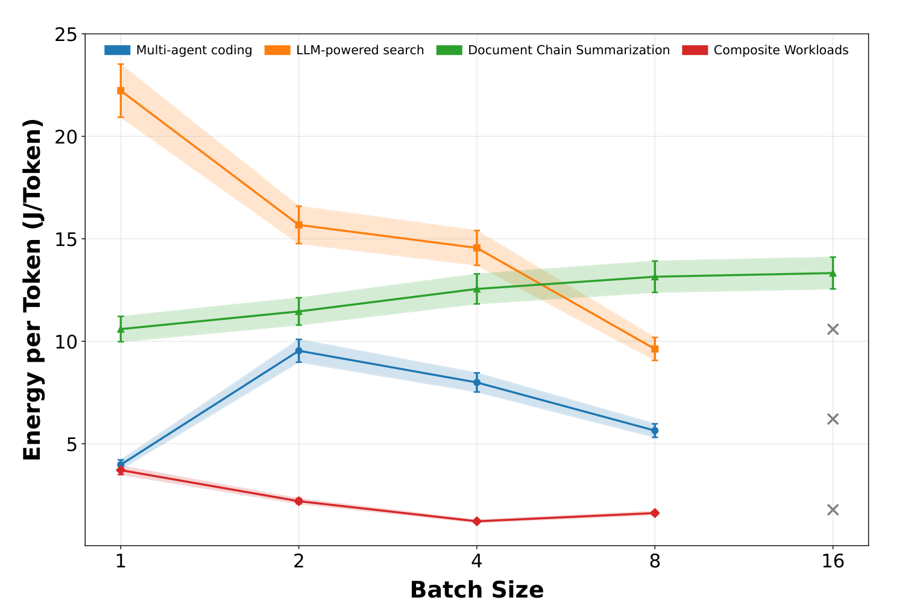
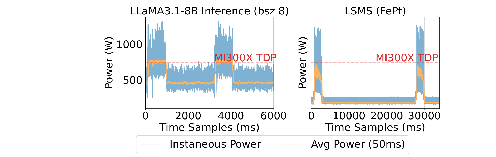
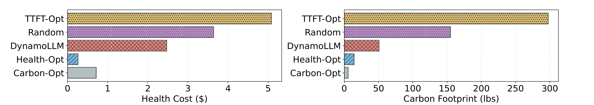
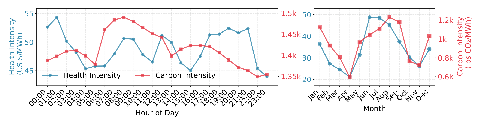
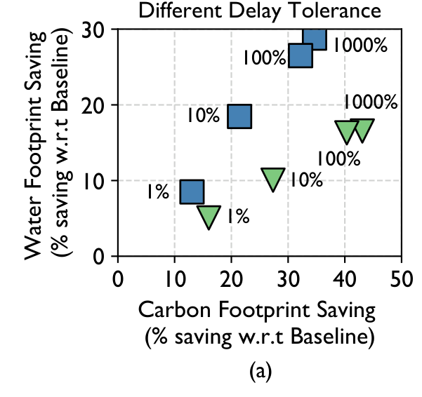

Which additional metric changes the decision?
A better metric can reveal a different operating point, and that operating point may need a different system design.
Energy is not carbon
Operational carbon
carbon = Σregion, time energy × carbon intensity
gCO₂e = kWh × gCO₂e/kWh. Same electricity, different place or hour → different carbon.
Declare the boundary. GPU energy ≠ server energy ≠ facility energy (cooling, power delivery). If facility energy is measured, do not multiply by PUE again.
Average vs. marginal intensity answer different questions (reporting vs. “what changes if I shift this load?”); they are not interchangeable.
A teaching example (not paper data)
Energy
Config A
1.0 kWh
Config B
1.2 kWh
Grid intensity
Config A600 gCO₂e/kWh
Config B100 gCO₂e/kWh
Operational carbon
Config A
600 g
Config B
120 g
B uses more energy but emits 5× less under this accounting.
Routing, batching, power caps. Hardware is already built.
Months – years
Provision & procure
Capacity, hardware mix, lifetime, replacement. Embodied carbon is a real lever.
Allocating past manufacturing to a request is an accounting convention: deleting the request does not undo the manufacturing emissions.

EcoServe: in the studied A100/H100 inference servers, host CPUs are a minority of provisioned power (TDP) but the majority of embodied carbon. Measuring only GPU joules misses this.
[P1] Y. Li, Z. Hu, E. Choukse, R. Fonseca, G. E. Suh, U. Gupta. EcoServe: Designing Carbon-Aware AI Inference Systems. arXiv:2502.05043, 2025 (Fig. 1, left).
SIGMETRICS in one slide
Scope
The design, modeling, measurement, and performance analysis of computer systems.
Metrics named in the CFP: latency, throughput, reliability, cost, accuracy, fairness, energy, and carbon footprint.
Tracks
Learning · Measurement & Applied Modeling · Systems · Theory · Operational Systems (new in 2026: deployed systems in significant real-world use; lessons learned)
Sustainability keywords in the CFP
Energy-efficient and carbon-aware computing systemsSustainability and power management
Journal-style model: three deadlines a year
Summerlate July
Fallmid October
Wintermid January
Accepted papers appear in POMACS (Proc. ACM on Measurement and Analysis of Computing Systems) and are presented at the conference.
Outcomes
Acceptwith shepherding
Resubmitmajor revision, within the next three deadlines
Rejectno resubmission for 12 months
Format
Up to 20 pages, single-column acmsmall; unlimited references and appendices.
[S1] ACM SIGMETRICS 2026 Call for Papers, sigmetrics.org/sigmetrics2026/call_for_papers.html (2026 cycle deadlines: Jul 29 2025, Oct 14 2025, Jan 13 2026).
The research style: an explanatory chain
Observationa proxy misses something
→
Measurement / modelquantify and explain it
→
Principled decisionalgorithm, controller, policy
→
Validationbounds, traces, prototype
Entry point
Typical question
Convincing evidence
Example today
Measurement
What does a common proxy miss? How often?
Calibrated instruments, repeated runs, diverse workloads, released data
How to split a shared footprint? What does it encourage?
Axioms, complexity, error vs. a reference allocation

Fair carbon accounting
My reading of the CFP scope and of the papers in this talk, not an official review rubric. Thumbnails: figures from the example papers (see slides 7–13).
Sustainability papers at SIGMETRICS 2026
A sample from the accepted-papers list: every entry point on the map is represented
Measurement

Carbon footprint of traffic flows
Per-flow carbon from router power models and traffic counters
El-Zahr, Zilberman (Oxford)
Measurement

LLM multi-request workflows
Energy per token vs. batch size and power cap when requests depend on each other
Ifath, Haque (Dalhousie)
Measurement

Minos
Group GPU workloads by their power-spike distribution to predict power under frequency caps
Jain, Jiang, Sinclair, Venkataraman (Wisconsin)
Accounting
Fair carbon accounting for LLM serving
Split one shared batch's footprint across requests (Shapley reference)
Li, Han, …, Gupta · PER / CarbonMetrics workshop
Systems
GreenCache · case study
Size the KV cache counting the SSDs' embodied carbon
Tian, Sun, Ding, Liu (Waterloo, Purdue)
Systems

HealthServe · case study
Route and configure inference with a modeled public-health cost
Zhou, Basu Roy (Utah)
Algorithms
Green Bin Packing
Online bin packing where part of each bin is free and the rest costs extra
Bibbens, Sigrist, Sun, Kamali, Hajiesmaili
Algorithms
Online Smoothed Demand Management
Buy, store and deliver energy at changing prices, penalizing abrupt changes
Selected by topic from sigmetrics.org/sigmetrics2026/accepted.html (checked 2026-11-10); not exhaustive. Figures: El-Zahr & Zilberman Fig. 2; Ifath & Haque Fig. 4a; Jain et al. Fig. 1; Li et al. Fig. 1 (PER 53(2), 2025, not POMACS); Tian et al. Fig. 8a; Zhou & Basu Roy Fig. 4; Green Bin Packing: my sketch of the model; Lechowicz et al. Fig. 1.
A familiar knob, a different optimum: GreenCache
Knob: KV-cache (prompt) reuse and cache capacityAvoids recomputing shared context.
New term: embodied carbon of the SSDs holding the cacheAvoided compute must pay for the storage used to avoid it.
Mechanism: resize the cache as load and grid intensity change, under latency SLOs
Reported: Llama-3 70B, French grid: −15.1% carbon on average (max −25.3%), >90% of requests within SLOResults for that evaluation, not a guarantee for every cache.
Same cache, opposite sign. Carbon with caching ÷ without, across 12 grids sorted by carbon intensity. Below the red line, caching saves carbon. On very clean grids (SE, IS, FR) the SSDs' embodied carbon outweighs the avoided compute.
Open question: where is the decision boundary, and can a light model predict it online?
[P2] Y. Tian, D. Sun, Y. Ding, S. Liu. Cache Your Prompt When It's Green: Carbon-Aware Caching for LLM Serving. SIGMETRICS 2026; arXiv:2505.23970 (Fig. 8a).
Beyond carbon: public health (HealthServe)
Electricityper datacenter, per hour
→
Pollutant emissionsPM2.5, SO₂, NOₓ
→
Dispersion & exposureweather, population
→
Modeled health costUS$ (AVERT, COBRA)
→
Routing & serving configwith carbon, TTFT SLO
Decision reversal. One hour of production LLM traces, oracle solutions: Carbon-Opt has the lowest carbon but a higher health cost; Health-Opt the reverse. The new metric changes which deployment is preferred.
Health costs are model estimates (screening-level), not clinical observations of illness caused by individual requests; an evaluation should carry that uncertainty.
[P3] S. Zhou, R. Basu Roy. HealthServe: A Public Health-Aware Inference Framework. POMACS 10(2), Art. 40, 2026 (SIGMETRICS 2026). doi:10.1145/3805638 (Fig. 4).
When is carbon an inadequate proxy?
Health vs. carbon intensity Texas, 2024

Hourly and monthly patterns differ: low-carbon hours can be high-health-cost hours (pollutant dispersion depends on the weather).
Carbon vs. water WaterWise

▼ Carbon-Greedy-Opt ■ Water-Greedy-Opt point labels = delay tolerance
Optimizing either footprint alone is suboptimal for the other in geo-distributed scheduling.
Look for disagreement first. Then ask: is it frequent, can the system react in time, and does the gain survive uncertainty?
[P3] HealthServe, Fig. 3. [P4] Y. Jiang, R. Basu Roy, R. Kanakagiri, D. Tiwari. WaterWise: Co-optimizing Carbon- and Water-Footprint Toward Environmentally Sustainable Cloud Computing. PPoPP 2025 (Fig. 3a).
Who owns the footprint of a shared batch?
Request Ashort prompt
Request Blong prompt
Shared batchcontinuous batching
One footprintmeasured total
By tokensEasy to compute; but simple does not mean it captures shared, non-linear costs.
Leave-one-outMarginal effect of each request; shares need not add up to the total.
Shapley valueFair under stated axioms and cost model; exact computation is exponential → approximate.
ScalabilityFairnessSample efficiencyIncentives
Why it is hard: energy / time per batch grows step-wise and non-linearly with the tokens in a batch (Llama-8B, A100), so simple latency-based attribution fails.
Separate two outputs: a consistent allocation of the measured total, and the causal saving of an action (delay, reroute). They answer different questions.
[P5] Y. Lisa Li, L. Han, G. E. Suh, C. Delimitrou, F. Kazhamiaka, E. Choukse, R. Fonseca, L. Yu, J. Mace, U. Gupta. Fair, Practical, and Efficient Carbon Accounting for LLM Serving. ACM SIGMETRICS Perf. Eval. Review 53(2), 2025 (Fig. 1).
Power availability and inference architecture
Prefill–decode provisioning under a power budget
Analytical model of capacity (queueing, compute/memory limits, KV-cache reservations) and average power for each xpyd deployment → a capacity–power Pareto front.
GreenLLM: disaggregated speculative decoding
Prefill–decode disaggregation (DPD)
New GPU (A100)prefill
large KV cache
Old GPU (T4 / V100)decode
Speculative decoding, disaggregated (DSD)
New GPU (A100)target model + verifier
token IDs + probabilities
Old GPU (T4 / V100)small draft model
Older GPUs get a useful second life; a scheduler picks DPD / DSD configurations under SLO, bandwidth and carbon.
workload shape × hardware × bandwidth × power → which serving configuration?
Next question: which additional objective or constraint changes that configuration again?
[P6] M. Yan, H. Wang, L. Biao, H. J. Chao, S. Q. Zhang, W. Cui. Analytical Power-Aware Provisioning for Prefill-Decode Disaggregated AI Inference. arXiv:2609.24639, 2026 (Fig. 1). [P7] T. Shi, Y. Wu, S. Liu, Y. Ding. Disaggregated Speculative Decoding for Carbon-Efficient LLM Serving. IEEE Computer Architecture Letters 24(2), 2025.
From average energy to power dynamics
Same energy, different trajectory conceptual sketch
Real trace: Qwen3-32B on vLLM, one H100 (20 ms DCGM example). The dataset: 1,788 fine-tuning and 405 serving runs at 100 ms per GPU.
Bursty arrivals widen the power band (~20 → 1,100 W) and raise the P99 ramp ~20×
The energy-optimal SM clock (1200 MHz) is not the ramp-optimal one
[P8] J. Wang, J. Singh, H. Xu, X. Li, M. Yan, S. Liu, Y. Li, Y. Chen, W. Cui. LLM-PowerTrace: A Dataset of Time-Resolved GPU Power Traces for AI Compute. arXiv:2610.38315, 2026, preprint (Fig. 2b, §4.2).
How to build a useful new metric
1 · Missing effect?
Name what existing metrics miss
Local harm, shared responsibility, a power constraint hidden by averages. Fix the decision context and the measurement boundary.
Today: health cost of grid pollutants (HealthServe)
2 · Decision reversal?
Old metric prefers A, new one prefers B
Then show how often this happens on realistic workloads. One synthetic example is a start, not evidence.
Separate measured from modeled quantities. Count controller overhead. How much estimation error changes the policy?
Today: 100 ms GPU traces; screening-level health models; SSD lifetime sensitivity
4 · Robust gain?
Better under fixed service
Hold throughput, TTFT, TPOT, rejection rate and a quality threshold. No credit for serving less or moving work outside the window.
Ablate: new metric only / new controller only / both
A sustainability metric becomes a systems contribution when it changes a concrete decision, captures an effect existing metrics miss, and survives measurement and validation.
Synthesis of the cases above; this framework is my proposal, not taken from a single paper. Thumbnails: HealthServe Figs. 3–4; LLM-PowerTrace Fig. 2b; PD power-aware provisioning Fig. 1.
Three kinds of “new”, and how to report them
A new impact dimensionHealth, water. Must show decision-relevant disagreement with existing objectives.
A corrected accountingEmbodied allocation, shared attribution. State the axioms, total boundary, and use case.
A new definition of useful work or timescaleFootprint per successful task; power dynamics. Needs reproducible task criteria and instrument resolution.
The concept need not be brand-new: the contribution can be a better measurement, model, algorithm or system around it. Goodput-style ratios already exist.
Report per useful task (proposed)
Fuseful = Fall attempts / Ntasks meeting quality & SLO
Numerator includes failures, retries, draft/verify, controller overhead. Always report totals, demand, and rejections next to the ratio: efficiency can improve while absolute use grows.
Optimize with budgets, not arbitrary weights
max useful goodput(x) s.t. latency SLO, quality ≥ q Cop(x) ≤ BC (carbon), Pwindow(x) ≤ BP (power)
Pick one added constraint first. Embodied carbon belongs to the slower provisioning decision.
Three candidate research directions
A · start here
Useful work under budgets
Quality- and SLO-aware inference. Begin with batching, power caps, cache capacity on a fixed model.
Question: can a resource-aware controller increase completed useful work under explicit budgets?
Later: model selection, reasoning budgets (needs careful quality evaluation)
B
Attributable shared serving
Cheap online attribution vs. an offline Shapley reference on small batches.
Question: does the accounting signal encourage useful behavior (batching flexibility, cache reuse)?
Keep fair allocation and causal savings separate
C
Coordinated power dynamics
Replicas that are each efficient can still add up to a bad aggregate power trajectory.
Question: does coordination reduce ramps or cap violations without losing much goodput?
Runs on local hardware; closed-loop testable
Candidate directions, not claims that the problems are untouched: carbon-aware inference, attribution frameworks and power characterization already exist. A focused related-work review comes before any novelty claim.
A: conceptual sketch. B: [P5] Li et al., Fig. 1. C: Jain et al., Minos, SIGMETRICS 2026, Fig. 1 (GPU power spikes above TDP).
Controllerselects config as load or budget changes
↺ feeds back into the runtime
Baselines
Performance-oriented policy · energy-oriented policy · existing policy for the chosen metric · offline reference with future information
Ablations
Remove the new metric · remove adaptivity · vary uncertain environmental parameters · unseen workloads and hardware
What we want to see
(1) a measurable disagreement between objectives (2) a useful performance–resource frontier (3) a low-overhead controller near it (4) clear failure conditions
No multi-region hardware? Measure one node for real, replay environmental traces for geography, and label that part as model-based evaluation.
Discussion
Where would one new metric most likely change a real decision, and let a system exploit it?
OPTION 1Inference provisioningbatching, power caps, cache capacity under a resource budget
OPTION 2Shared-resource accountingattribution that is cheap, fair and changes behavior
OPTION 3Coordinated power managementreplicas, ramps, cap violations vs. goodput
Macro view: which impacts matter. Systems view: make one of them observable and controllable.
Backup: likely questions
Isn't this just energy × another coefficient?
Sometimes. If the coefficient is constant across feasible actions, the optimizer does not change. The opportunity appears when impacts vary across actions, places, time or shared execution. Show that variation before building a controller.
Why not just optimize cost?
Cost may correlate with resource use, but that is an empirical question. Measure where it agrees with the environmental objective and where it does not, and report the cost of the improvement.
Are health and water measured per request?
Typically we measure computing activity and energy, then estimate consequences with external models and data. Report the chain, its spatial/temporal resolution and its uncertainty.
Is Shapley the correct footprint?
It is a principled allocation reference for a specified cooperative cost model. It does not measure the physical effect of removing one request.
Is a new metric enough for a SIGMETRICS paper?
A metric needs evidence of why it matters. The contribution can be a measurement methodology, a validated model, an algorithm or a system; aim to connect the metric to a demonstrated decision change and an evaluated mechanism.
What can we do without a large cluster?
Validate the response model and controller on available hardware; evaluate larger scenarios by calibrated simulation or trace replay, with conclusions tied to what was measured.
Backup: reading list
Zotero collection System → computing_knobs (11 papers)
Paper
Venue
Role in this talk
[P1] EcoServe: Designing Carbon-Aware AI Inference Systems
arXiv 2025
Operational vs. embodied carbon
[P2] GreenCache: Cache Your Prompt When It's Green
SIGMETRICS 2026
Case: familiar knob, new optimum
[P3] HealthServe: A Public Health-Aware Inference Framework
POMACS / SIGMETRICS 2026
Case: new objective, decision reversal
[P4] WaterWise: Co-optimizing Carbon- and Water-Footprint
PPoPP 2025
Carbon vs. water
[P5] Fair, Practical, and Efficient Carbon Accounting for LLM Serving
SIGMETRICS PER 2025
Attribution in shared serving
[P6] Analytical Power-Aware Provisioning for PD-Disaggregated Inference
arXiv 2026
Capacity–power modeling
[P7] GreenLLM: Disaggregated Speculative Decoding for Carbon-Efficient Serving
IEEE CAL 2025
Architecture + carbon
[P8] LLM-PowerTrace: Time-Resolved GPU Power Traces
arXiv 2026
Power dynamics
[P9] Sprout: Green Generative AI with Carbon-Efficient LLM Inference
EMNLP 2024
Output/quality as a knob
[P10] FissionReady: Workload and Power Scheduling with Small Modular Reactors
arXiv 2026
Compute–energy supply coupling
[P11] Strategies and design for increasing AI sustainability